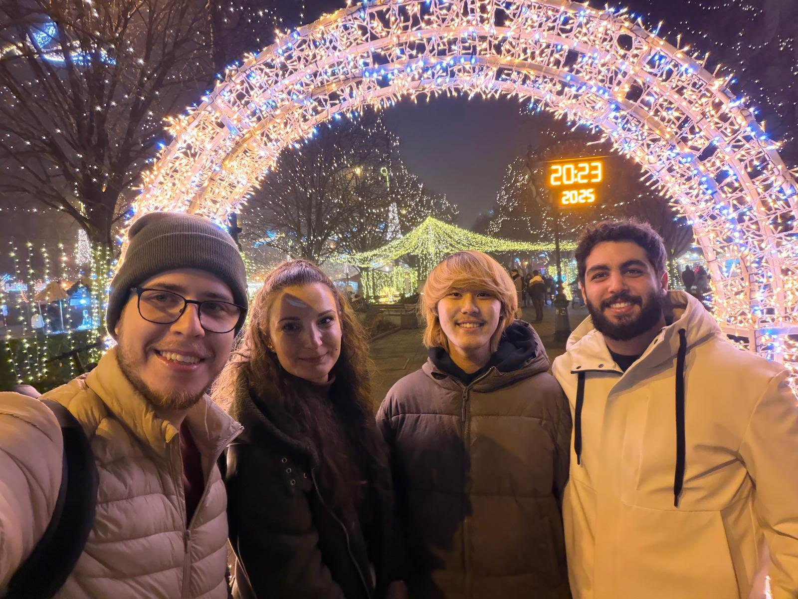

現役生コラム
結構しんどい！ホームシックについて
ユウゴ｜University of Debrecen｜Computer Science（学士）｜2026.06.28
みなさんこんにちは。
ハンガリー留学ラボのユウゴです。
今回は「ホームシック」について書いてみます。

ぶっちゃけホームシックになるの？
私はなりました！というより、ほとんどの人がなると思います。特に高校卒業後すぐに留学する人や実家暮らしだった人、日本への思い入れが強い人はホームシックになる可能性が高いと思います。
私は海外生活にかなり憧れていました。「一時帰国までの1年間なんてあっという間だろう」と思っていましたし、自分がホームシックになるなんて全く想像していませんでした。
原因は？
原因は、全く知らない土地で一人暮らしを始めたことです。文化も気候も違う環境で、人間関係も生活もすべて一から築かなければなりません。
家に帰っても家族の声は聞こえず、夜はとても静かです。YouTubeなどを見ても、多くの留学生がホームシックを経験しています。
実際どうだった？
到着した最初の数日間は本当にきつかったです。初日の夜には停電し、翌朝起きても誰とも話せず、送り出してくれた家族や友達のことを考えて泣いてしまいました。
大学が始まってからは落ち着きましたが、約1か月後に再びホームシックになりました。
どうやって克服した？
一番効果があったのは「時間」でした。毎日を一生懸命過ごしていると、少しずつホームシックを感じる時間は減っていきました。
テレビ電話も便利ですが、実際に会って話す温かさとは違います。
私からのアドバイス
① 毎日を全力で過ごす
日本を考える時間より、留学生活を楽しむ時間を増やすことが大切です。

② 思い出のある物を持ってくる
思い出のある物は心の支えになります。
③ 無理をしすぎない
無理をせず、自分のペースで生活していれば自然と慣れていきます。
まとめ
ホームシックは留学生なら誰にでも起こり得ます。毎日を積み重ねれば、現地での生活が当たり前になります。